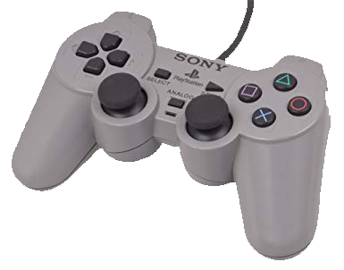
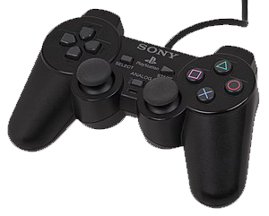
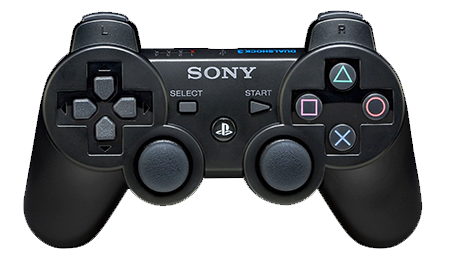
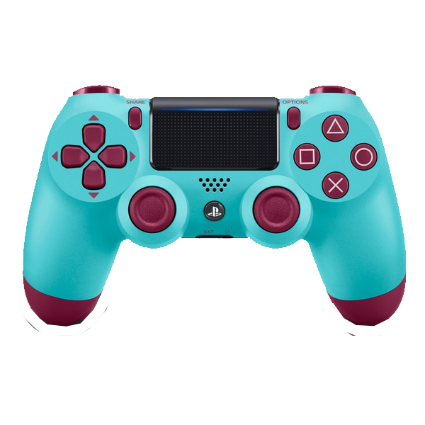
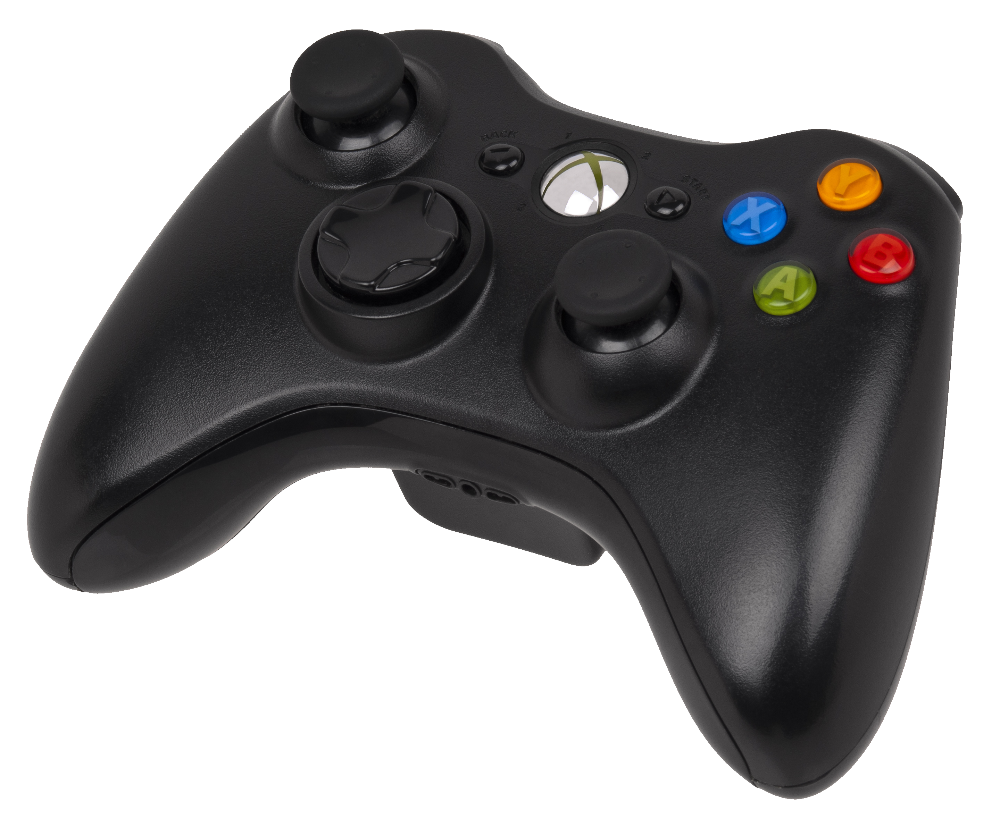
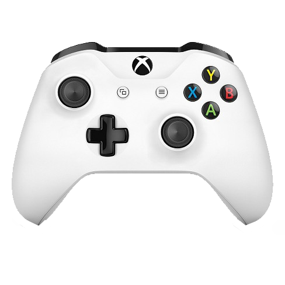

Dualshock 1
The first Playstation controller, named the Dualshock, featured a very simple design consisting of triggers, bumpers, buttons and two joysticks. Although the controller only worked via wired connection and some may argue that the design was ugly, these criticisms were easily ignored when compared to the first Xbox controller. The biggest difference was in the overall shape of the controller; the Dualshock 1 allowed for a comfortable grip mostly due to its simplicity. The basic layout of controls also allowed for easy use during games.
Dualshock 2
The controller which came with the PS2, the Dualshock 2, was virtually indistinguishable from the original. They looked near enough identical accompanied by the addition of very few new features. Overall this lack of change may be excusable because the games played on each console were very similar at the time, so they did not demand much change in the controls.
Dualshock 3
In the case of the Dualshock 3, the controller used for the PS3, the design itself was disappointingly very similar to the previous two however Sony had added many new functions to this controller which made it unique. First of all, it was able to link wirelessly to the Playstation which let players play further from the console and mostly allowed for an easier gaming experience. This change came at the same time as when the Xbox 360 controller became wireless. Additionally, there were four LEDs placed on the back of the controller which were used to indicate which player number you were. This proved useful in games which featured split screen play.
Dualshock 4
This was by far the biggest development Sony has made on their gaming controllers to date, the release of the Dualshock 4 sparked excitement in gamers globally. This new controller had a new sleek design which was not only practical for comfortable use but also gave the controller an attractive aesthetic. Much like the Xbox One controller, the Dualshock 4 had impressive build quality and was customisable by players. It also came with an array of exciting new functions: it had a built in speaker which games could utilise for cutscenes and dialogue which added an extra dimension to gameplay. You could plug your headset directly into the controller rather than the console and there was an interactive touch pad built onto the top of the controller. Also the controller contained accelerometer to track motion which could be used in games or with the virtual reality headset which came with the PS4.
The First Xbox Controller
The controller for the first Xbox included and incredibly clunky and ugly design, users found its design to be difficult to use due to its large size and non-ergonomic handles. It featured a wired connection which restricted the players ability to use it at any distance from the console and the controller had a cheap build in general.

Xbox 360 Controller
The second Xbox controller, the Xbox 360 controller, was a great success and was very well received by players. This was mostly thanks to its new design which was considerably more attractive than its predecessor. This new model of controller was available in an array of colours which the rival PS3 controller did not have at the time. New features were included in this design such as a wireless connection to the console (allowing players the ability to play without the fuss of wires) and the ability for the controller to vibrate in accordance with events in certain games. In conclusion it was a huge upgrade to the previous controller whilst Sony's rival model struggled to compete.
Xbox One Controller
The Xbox One controller had a very similar design to the Xbox 360 controller, the main difference being the build quality. Not many new features were introduced to this model, this may have been because the actual console had undergone a lot of changes in this generation in comparison to the previous model. However that did not mean the price of the controller stayed consistant with the 360, it was incredibly expensive and left players frustrated when they needed to buy a new controller.
Summary: On this page I have focused on the technology used by the main competetors in the console gaming industry, Sony and Microsoft, and more specifically their controllers. I believe this is significant in the history of the consoles because it is the key way in which the user interacts with the console. This is significant because the way the player interacts with the console determines their overall experience, and the evolution of these devices has kept players intrigued for years with their new technologies. Most of this evolution was driven by competition, which rapidly forced the controllers to develop far beyond a player's basic gaming needs; from the clunky design of the first Xbox controller to the new wireless Dualshock 4 with built in accelerometers.